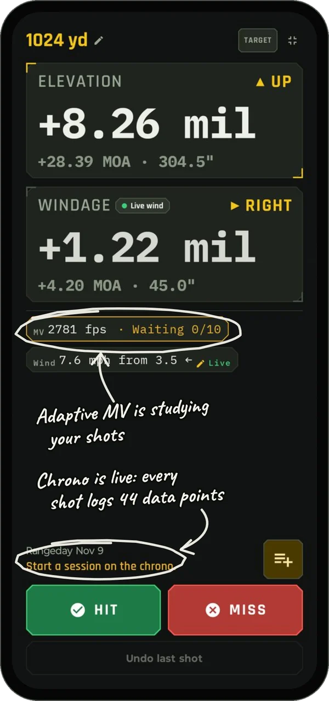
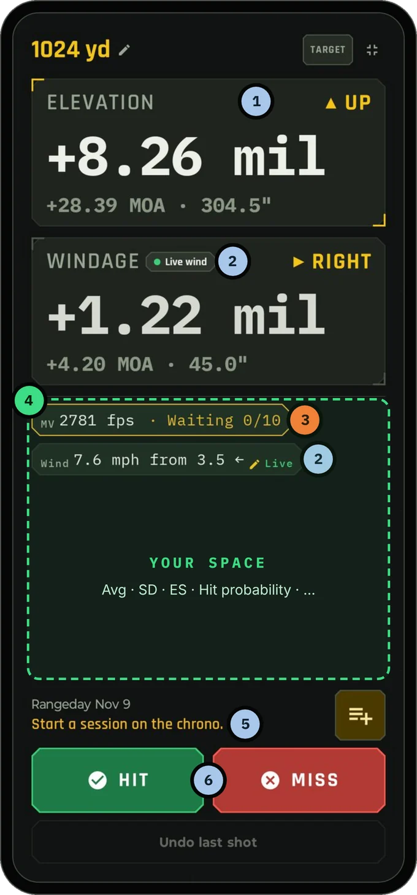
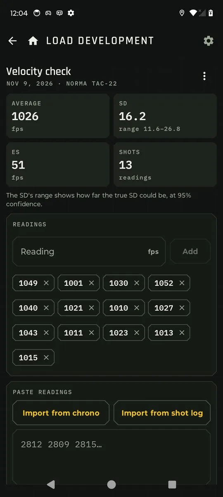
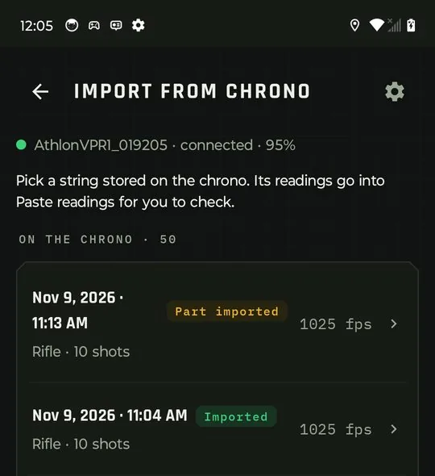
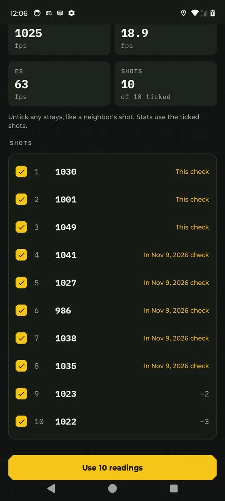
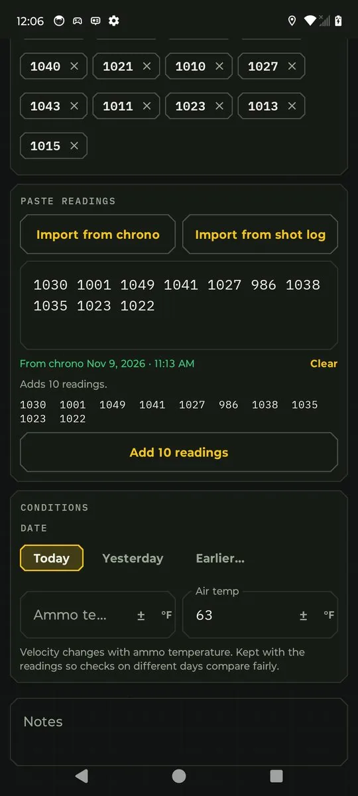
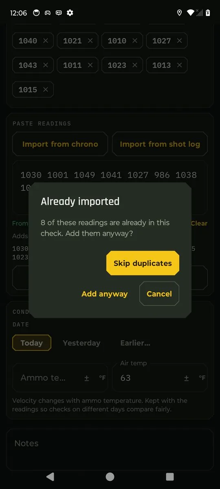
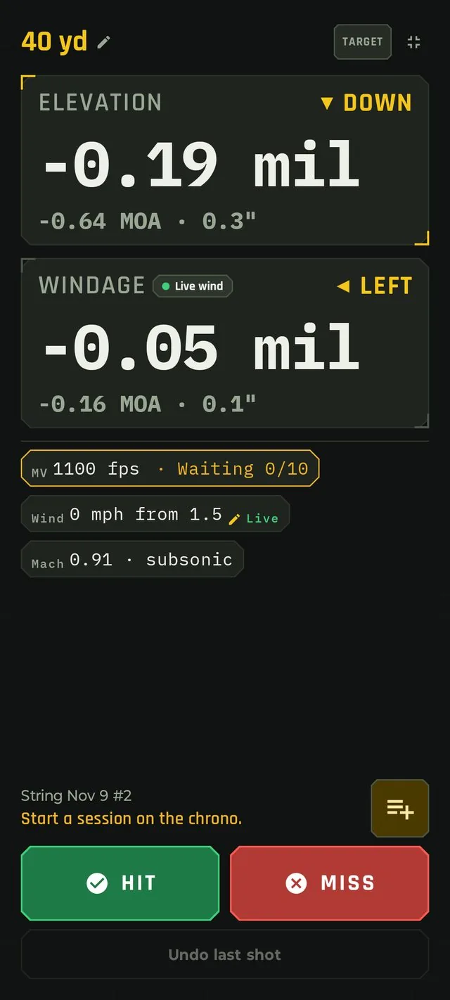
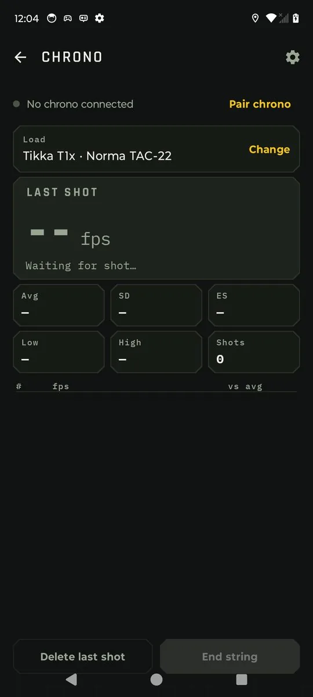

A live feed from your chrono, wired into your dope.
Pair your chrono with Bullseye Ballistics and every shot streams in live over Bluetooth, landing where it's useful: in a velocity check, a load workup, your shot log, or the solution you're about to dial. No retyping numbers off a tiny screen. No spreadsheets.

Six ways Bullseye uses your chronograph
Every feature uses the readings you already shoot. Nothing new to carry, nothing to set up after the first pairing. All six lead to more accurate hold calculations, particularly Adaptive MV.
Auto-logging
On the Solution screen, every reading logs a shot with its measured velocity and the conditions at that moment. Call it by tap or by voice.
Adaptive muzzle velocity (optional)
A recency-weighted rolling average of today's readings, each measured against what your load should do at that temperature and round count. Strays are rejected, the trend is kept, and the solver dials the speed your rifle is really shooting.
Chrono mode
A live string screen. Watch each reading, the shot count, low, high, average, SD and ES as you shoot, with a table listing every shot. Then save the string as a velocity check, a workup rung, or a brand new load.
Import from chrono
Reads any string stored on the chronograph directly over Bluetooth. No exporting, no files, no cables. It lands in a velocity check with its date, after you untick the strays.
Import from shot log
Turn a range day's logged shots into a velocity check, with the date, temperatures and barrel count filled in for you.
Load development imports
Fill charge and seating-depth rungs from the chrono or the shot log. One ladder string, split rung by rung.
Pair it once. Then forget about it.
The chronograph pairs on the Sensors screen, the same place as your wind meter, weather meter and other devices such as the external display HUD. You confirm a code on the phone the first time, and from then on Bullseye reconnects by itself whenever the chrono is on and nearby. Every time it connects, Bullseye syncs the chrono's date and time to your phone, so every reading, string and import carries the right timestamp, everywhere it shows up.
Dial with the speed you're actually shooting
Every firing solution starts from one number: muzzle velocity. If it's off by 15 fps, every elevation the solver gives you is off too, and the error grows with distance. Your load's MV was measured on another day, in other weather, at another round count, maybe on another chronograph. Adaptive MV fixes that while you shoot. It's optional: one switch in Solver settings turns it on or off. Once 10 readings are in, the solver dials with the speed your rifle is producing right now.
Where it pays off
Ammo that warms up
Your temperature table predicts how the load should change as it heats up in the sun. Adaptive MV checks that prediction against the chrono and corrects what the table misses, shot by shot.
Same recipe, new components
A new lot of powder or primers can move a load's speed. Instead of a separate chrono session before you trust your dope again, your first 10 rounds of the day put the solver back on.
A barrel that's slowing down
Velocity falls as a barrel wears. Each reading is compared with what the load should do at that barrel's round count, so today's real speed takes over wherever the trend runs out.
Stage one to the last stage
Shoot your warm-up and first stage over the chrono. From then on you're dialing today's speed, not last month's, without stopping to true your dope.
The math, in plain terms
It isn't a simple average of your last 10 shots. Three things make it trustworthy.
- It works in gaps, not raw speeds. For every reading, Bullseye works out what your load should have done for that shot's air and ammo temperature and that barrel round count. The gap is the difference. A string that warms up through the afternoon doesn't look like a change in speed, because the prediction moves with it.
- Newest counts most. Weights halve every 4 shots (age 0 is the newest shot). The shot 4 back counts half as much as the newest, the shot 8 back a quarter. With a full window of 10, the newest 4 shots carry about 60% of the result and the oldest about 4%, so it follows a barrel that's heating or a load that's drifting.
- Strays are left out. Bullseye takes the median gap and drops any reading farther from it than 3 times the typical spread (the median absolute deviation), or 15 fps if that's larger. A neighbor's shot or a misread doesn't drag your dial.
Only warm-bore readings on this rifle and load from today's string count, so cold and clean-bore shots don't skew it. Nothing reaches your dial until 10 readings are in.
A worked example
Your load predicts 2812 fps for today's conditions. Ten readings come in. Shot 5 is a slower rifle on the next bench that the chrono picked up.
| SHOT | MEASURED | GAP | WEIGHT | SHARE |
|---|---|---|---|---|
| 1 (oldest) | 2816 | +4 | 0.21 | 4% |
| 2 | 2819 | +7 | 0.25 | 5% |
| 3 | 2818 | +6 | 0.30 | 6% |
| 4 | 2821 | +9 | 0.35 | 7% |
| 5 | 2774 | −38 | – | stray, left out |
| 6 | 2822 | +10 | 0.50 | 11% |
| 7 | 2824 | +12 | 0.59 | 13% |
| 8 | 2823 | +11 | 0.71 | 15% |
| 9 | 2826 | +14 | 0.84 | 18% |
| 10 (newest) | 2825 | +13 | 1.00 | 21% |
The rifle is speeding up as the string goes on, as most do once the barrel, chamber and ammo heat up. A plain average of all 10 would have you dialing about 6 fps too slow, because one stray shot drags it down. Take the stray out and a plain average still trails behind, since it gives shot 1 as much say as shot 10. Adaptive MV drops the stray and leans on the newest shots, so the next shot is dialed for the speed the rifle is producing now.
Always know what you're dialing
The MV chip makes the state impossible to miss: plain when it's off, amber while it collects, orange when the adaptive value is in your solution, and dimmed and marked held if the chrono disconnects, so it keeps the last result rather than jumping back mid-string. A new string starts fresh.
Tap the chip to see every reading behind the number, which ones were left out and why, and how far today's speed is from your load's MV. If today's number looks right, save it as the load's MV or as a velocity check in one tap.
Every shot logged the moment it's fired
With the chrono running while you shoot from the Solution screen, each reading logs the shot straight away: rifle, load, range, wind, weather, angle and the measured velocity, captured at the instant of the shot. A gust that arrives while you're spotting your impact doesn't change what was recorded.
- Call it when you're ready. The string line shows Shot 6 · call it. Tap Hit or Miss, or just say it, and the call is added to that shot instead of logging a new one. A slow call still lands on the right shot, right up until the next reading arrives.
- Didn't call it? It stays in your log as a no-call, with its velocity, and doesn't count against your hit rate.
- Deleted it on the chrono? Bullseye follows along: an uncalled shot is removed, and a called shot keeps your call but drops the velocity.
Two chips, your choice of numbers
The MV chip always shows the muzzle velocity the solver is dialing with, and whether Adaptive MV is in charge. The Chrono chip shows up to three numbers you choose in Settings:
| CHRONO CHIP FIELD | WHAT IT SHOWS | |
|---|---|---|
| Velocity | Your last shot's speed | |
| ±N | Last shot against the MV you're dialing (with Adaptive MV), or against the string average | |
| Avg · SD · ES | The current string's average, standard deviation and extreme spread | |
Tap the chip for all five numbers and the string's readings.
Reading the Solution screen
Chrono paired and Adaptive MV on, just before the first shot of the string.

- 1Elevation and windage
Dialed with the muzzle velocity on the MV chip. Once Adaptive MV is live, that's the speed your rifle is shooting today, not the load's book number.
- 2Live wind
The wind meter is streaming. Windage follows it, and every logged shot stamps the wind at that instant.
- 3MV chip · Adaptive MV (optional)
It's on and counting. Amber Waiting 0/10 means it's collecting warm-bore readings. At 10 it turns orange, Adaptive, and the solver dials today's speed. Tap the chip to see every reading behind the number.
- 4Your space
Free room for whatever you want on screen while you shoot. Pick and arrange it in Solver settings: the Chrono chip (last velocity, ±N, Avg, SD, ES), hit probability, Mach and more.
- 5Chrono string line
The chrono is connected and waiting on you. Start a session on the chrono and every reading logs a shot to today's string, Rangeday Nov 9. The line then reads Shot 1 · call it.
- 6Hit and Miss
Call it by tap or by voice. The call lands on the chrono's shot instead of logging a new one.
What goes into every logged shot
The chrono's reading is joined with everything else Bullseye knows at that instant, from your sensors, your phone, the solver and your profile, and written to the shot log as one entry. 44 data points per shot. Dashed fields record where a value came from (sensor, phone or typed).
Conditions are captured when the chrono reads. Your call is added afterwards and never re-stamps them.
Already shot it? Bring it in.
The Add velocity check screen has two buttons, right above the box you already paste readings into: Import from chrono and Import from shot log. Both fill that same box, and nothing is added until you tap Add, exactly like pasting. You always see the numbers before they count.

Import from chrono
This isn't a file import. There's nothing to export, email or copy off the chrono. Bullseye talks to the chronograph over Bluetooth and reads the strings straight out of its memory: up to 50 complete strings, with every shot in each. It lists them newest first, with the date, time, shot count and average, and marks any you've already brought in.
- Untick the strays. Open a string and every shot is ticked. Untick a flyer, a fouler or a neighbor's shot the chrono picked up, and watch the average, SD and ES update before you commit.
- Dated for you. The check takes the string's date and time from the chrono, so a string shot last Tuesday is filed as last Tuesday.
- Your temperatures, your call. The chrono doesn't record temperature, so Bullseye asks you to add it if you know it rather than guessing.




Import from shot log
If you log shots with Bullseye, your range days already hold measured velocities, along with the date, air temperature, powder temperature and the barrel's round count for every shot. Import from shot log puts all of that to work.
- Just this load. A range day with two loads? Only the shots on the load you're adding a check to are listed and imported.
- Cold and clean-bore shots start unticked, so they don't drag down a warm-bore check. Tick them back in if you want them.
- Conditions filled in. The date, the average air temperature, the average ammo temperature you entered, and the barrel's round count come straight from the log. Bullseye never invents an ammo temperature you didn't enter.
- See the spread. The string screen shows the air and powder temperature range and the barrel count range for the shots you've ticked.
- Split by temperature. When the shots span 15 °F or more, Bullseye offers to split them into two checks, cooler and warmer, so your MV vs temperature table gets two real points instead of one blurred one. You review both before anything is saved.
Load development, rung by rung
Charge ladders and seating-depth tests get the same buttons on every rung. Most ladders are shot as one string on the chrono, so on a rung the shots start unticked: tick the ones that belong to this rung, and the shots you've already used on another rung are tagged so the next rung picks up where the last one left off.
Never counted twice
Every imported reading remembers exactly which shot it came from. Whether a shot reaches you from the chrono's memory, from Chrono mode or from your shot log, Bullseye recognizes it. Shots already in another check of the load start unticked and say where they are, strings you've used are marked Imported or Part imported, and if a duplicate does make it into the box, Bullseye asks before adding it.
Just as good below Mach 1
Rimfire, or subsonic .300 BLK, 8.6 Blackout or 338 ARC: the chrono reads it and Bullseye solves it, the same way it handles a 3100 fps PRC. Nothing to switch, no special mode. The solver predicts when a shot is going to be subsonic and reacts accordingly.

1 2- 1The Mach chip
The solver shows the bullet's speed at the target as a Mach number, so you can see at a glance that this shot stays below the speed of sound: 0.91 · subsonic. Add it to the Solution screen in Solver settings.
- 2The MV chip
1100 fps is the load's muzzle velocity, with Adaptive MV waiting on the chrono. After 10 readings it dials today's measured speed, subsonic or not.
- ◎The chrono: 65 to 5000 fps
The Athlon Rangecraft Velocity Pro is a Doppler radar, rated by Athlon from 65 to 5000 fps. No sky screens to shoot through, and slow rounds read as cleanly as fast ones.
- ✓Tested at 1026 fps
We ran the full live-fire test on a Tikka T1x with Norma Tac-22. Live strings, velocity checks, imports, auto-logging and Adaptive MV all passed, exactly as on a centerfire rifle.
Velocity matters even more down here. A subsonic bullet spends longer in the air and drops faster, so a few fps of difference shows up on target sooner. That's exactly what Adaptive MV is built to catch.
Better data in, better hits out
Every reading that arrives through the chrono feeds features you already rely on, with real numbers instead of book values.
Measured SD
Your load's real velocity spread goes into hit probability, so the odds you see reflect your ammo, not a guess.
MV vs temperature
Dated, temperature-stamped velocity checks build your temperature table. Split checks give it two points from one range day.
Barrel wear trend
Every check carries the barrel's round count, so you can watch velocity fall off as the barrel wears.
A live string screen built for the bench
Open Chrono mode from the Home screen. It starts on your current rifle and load, so there's nothing to pick before your first shot. Each reading appears the moment the chrono measures it, with the running average, SD and ES for the string. Bullseye works them out from the raw speeds itself, so they're always in your units and always consistent with the rest of the app.
Shooting something new and haven't decided where it belongs? Leave it as Not saved yet and choose when you're done.
End the string, choose where it goes
- Velocity check on a load. Saved with the date, ammo and air temperature and the barrel's round count. It feeds your measured SD, your MV vs temperature table and your barrel wear trend. You land back on an empty Chrono mode with a "Saved to 6GT · Berger 109's" note and a link to the load, ready for the next string.
- Workup rung. Pick a workup on the rifle, then the rung, or add a new rung. Bullseye opens that rung with the readings in place.
- New load. Pick the rifle and type a name. The load is created with its MV set to the string's average, the measured SD, and this string as its first velocity check. Its editor opens so you can add the bullet and BC.
The shots you fire are added to the barrel's round count when you save. Discard asks whether to count them anyway.

Good to know
Which chronographs work?
The Athlon Rangecraft Velocity Pro. You can still type or paste readings from any other chronograph, as you can today.
Do I have to export a file from the chrono?
No. Import from chrono reads the strings directly from the chronograph over Bluetooth. There's no export, no file to move and no cable.
Do I need the chrono connected to import?
For Import from chrono, yes: turn it on near your phone and Bullseye reconnects. Import from shot log works any time, with or without the chrono.
What if my phone loses the connection mid-string?
When it reconnects, Bullseye reads the chrono's current string again and adds any shots it missed, in order. Very recent ones are logged as usual; older ones still count toward your string's stats and Adaptive MV.
Will Adaptive MV change my dial without telling me?
No. It waits for 10 readings, and the MV chip always shows whether the adaptive value is in use. Turn it off in Solver settings at any time.
Can Bullseye start a session or change my chrono's units?
No. Sessions, units and device settings stay on the chrono. Bullseye reads the velocities and converts them to your units.
My chrono shows a different SD. Why?
Bullseye works out average, SD and ES from the raw readings in your chosen units, so the numbers match everywhere in the app. Small differences from the chrono's own screen come from rounding and unit conversion.
What if I import the same string twice?
Bullseye recognizes each shot, unticks the ones already in your checks, and asks before adding a duplicate.
Use it everywhere
Open Bullseye Ballistics, pair your chronograph on the Sensors screen, and your next string does the rest.
Athlon and Rangecraft are trademarks of their owner.